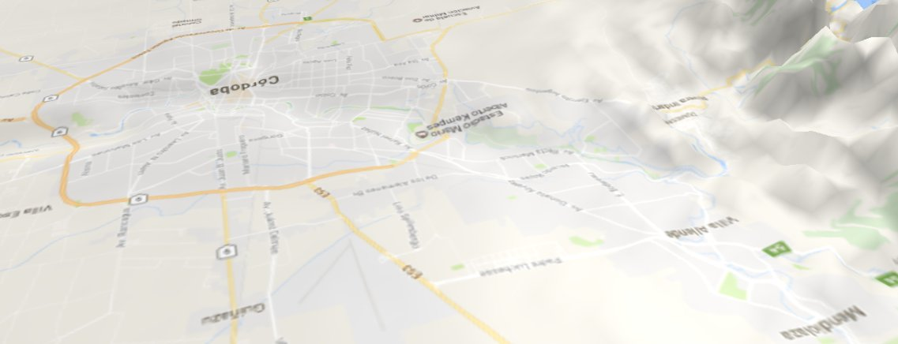
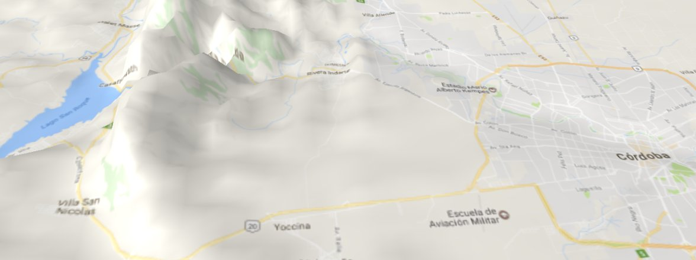
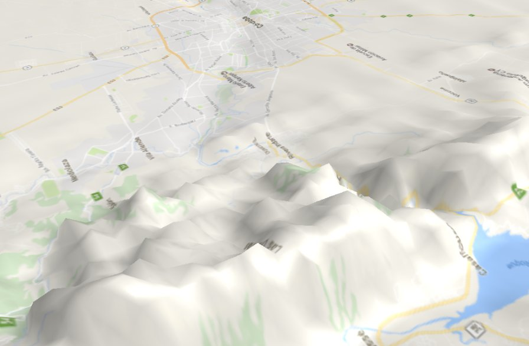
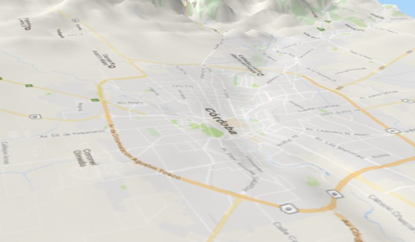
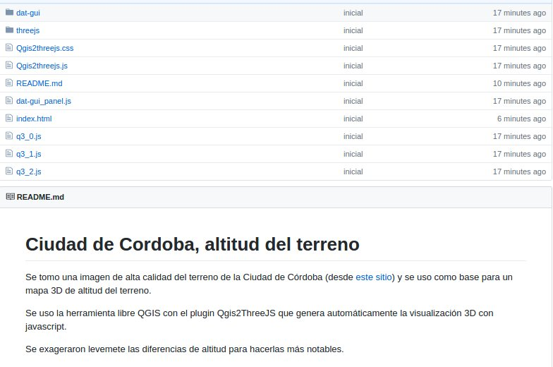

Córdoba en 3D — altitud del terreno + Google Maps
Originalmente publicado como hilo en Twitter.
Así se ve la Ciudad de Córdoba si tomás una imagen de alta calidad con la altitud del terreno y le pegás encima datos de Google Maps.




Podés navegarlo en 3D desde tu computadora acá: https://modernizacionmunicba.github.io/Cordoba-altitud-del-terreno/

Código fuente: https://github.com/ModernizacionMuniCBA/Cordoba-altitud-del-terreno
Nota: este trabajo fue hecho por un proveedor que contratamos desde la Dirección de Sistemas de Información de la Municipalidad de Córdoba.
Comentarios
Comments powered by Disqus